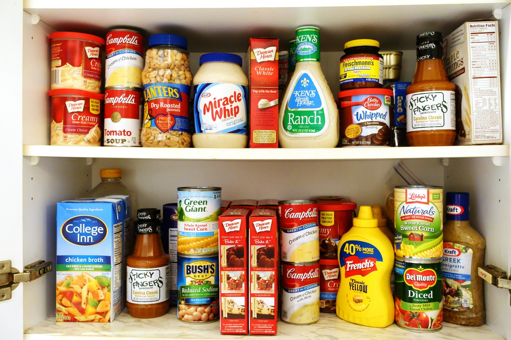
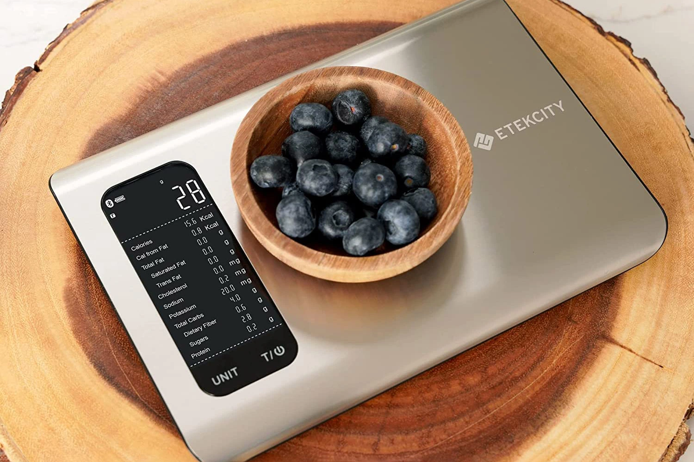

How to Use The Calculator
"Foods and Meals Page"
The "Foods and Meals" page is where you manage the foods and meals in your personal registry.
Add a Food
Click "Add a Food" to add a new food to your registry. You can choose between two methods:
Auto Add lets you search the USDA food database to automatically fill in a food's nutrition info. There are three search categories:
- Branded Foods – Search by brand first (e.g. Kellogg's, Old El Paso), then search for a specific product under that brand.
- Restaurant / Fast Food – Search for menu items from popular restaurant and fast food chains.
- General Foods – Search for common whole foods, ingredients, and generic items.
After selecting a food, you'll be asked to choose a portion size. The food's name, calories, protein, fat, carbs, serving size, and unit of measurement will all be filled in automatically. You can edit any of these values before submitting.
Manual Add lets you type in all of a food's info yourself: its name, unit of measurement (e.g. grams, ounces, cups), serving size, calories, fat, carbs, and protein.
Add a Meal
Click "Add a Meal" to combine foods from your registry into a meal. Give the meal a name, then add ingredients and set how many servings of each you want. Use the "Add Ingredient" and "Remove Ingredient" buttons to adjust the list.

"Today's Nutrition"
The "Today's Nutrition" page is where you will be able to update and view your calories and macros for the current day. There are two options to choose from on that page:
The first option will be to "Add a Food/Meal to Today's Nutrition". Upon selecting this option, you will be prompted to provide the name and the number of servings for the food/meal you wish to log. The program will then increment the total calories, carbs, protein, and fat for the day based on your inputted food/meal's nutrition facts (and number of servings).
The second and final option will be to "Remove a Food/Meal From Today's Nutrition". Upon selecting this option, you will be prompted to provide just the name of the food/meal you would like to remove from the log. The program will then decrement the total calories, carbs, protein, and fat for the day based on your inputted food/meal's nutrition facts (and number of servings that the program detects).
